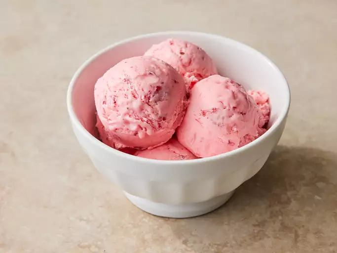

Easy Strawberry Ice Cream
Description
This strawberry ice cream is super easy to make. This recipe doesn't use an egg-custard base but still tastes rich and creamy.

Ingredients
- 2 cups mashed fresh strawberries
- 2 cups whole milk
- 2 cups heavy cream
- 1 cup white sugar
- 2 teaspoons vanilla extract
- 1/4 teaspoon salt
- 2 drops red food coloring (optional)
Directions
- Gather all Ingredients.
- Combine strawberries, milk, cream, sugar, vanilla, salt, and food coloring in a large bowl.
- Pour strawberry mixture into the freezer bowl of an ice cream maker; freeze according to the manufacturer's directions.
- Transfer to an airtight container and freeze until firm.